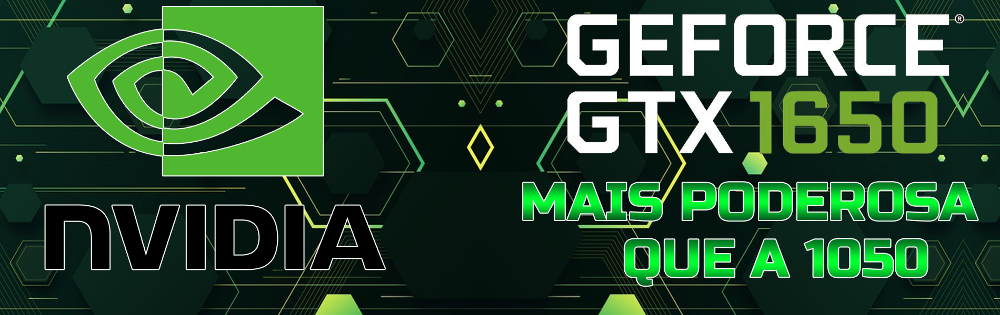
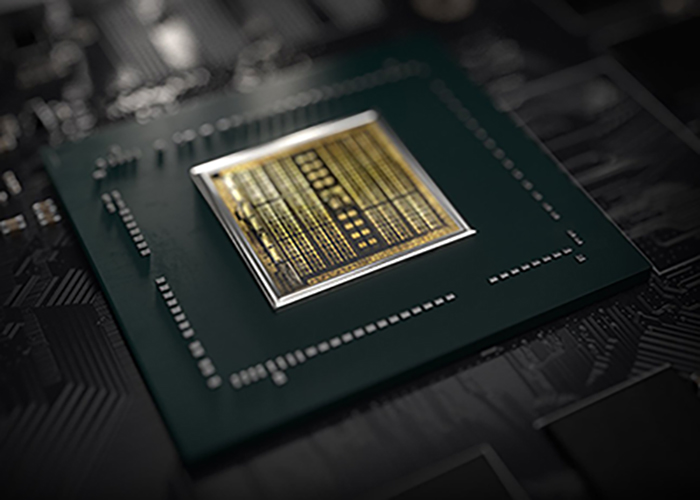

<!DOCTYPE html>
<head>
<meta charset="UTF-8">
<meta name="viewport" content="width=device-width, initial-scale=1.0">
<title>Principal</title>
<link rel="stylesheet" type="text/css" href="1650.css">
<style type="text/css">
@font-face{
font-family:Bebas Neue;
src: url('Bebas Neue.ttf');

font-family:Oswald;
src: url('Oswald Bold.ttf');

font-family:Russo One;
src: url('Russo One.ttf');
}
</head>
<body>

<!--Cabeçalho-->
<div class="header-area">

</div>
<!--------------------------------------------------->


<!--Menu-->
<div class="menu-area">
<a href="index.html" class="menu">HOME</a> &nbsp; &nbsp; 
<a href="ryzen.html" class="menu">RYZEN 7 3750H</a>  &nbsp; &nbsp;
<a href="1650.html" class="menu">GTX 1650</a> &nbsp; &nbsp;
</div>
<!--------------------------------------------------->


<!--Area Principal e todo o corpo do  documento-->
<div class="principal">
<div align="center">
<h1 class="title">
QUALIDADE GRAFICA E ALTA PERFORMACE
</h1>
</div>
<!--------------------------------------------------->


<div align="center">

</div>

<!--Texto sobre  a placa de video-->
<p class="text">
A <span class="color-text-green">Nvidia  GEFORCE GTX 1650</span> para portáteis é 
uma placa de vídeo móvel baseada na 
arquitetura Turing (chip TU117). Comparada às GPUs RTX 2000 mais rápidas 
(por exemplo, RTX 2060), a 1650 não integra Raytracing ou núcleos Tensor. 
O desempenho deve ser um pouco mais rápido que o da antiga GeForce GTX 1050 Ti. 
Comparada com a versão desktop, a GTX1650 móvel usa todos os 1024 shaders 
do chip TU117.
</p>

<P class="text">
A geração Turing não apenas introduziu o raytracing para as placas RTX, 
mas também otimizou a arquitetura dos núcleos e caches. De acordo com a Nvidia, os 
núcleos CUDA oferecem agora uma execução simultânea de operações de 
ponto flutuante e operações inteiras para aumentar o desempenho em cargas
de trabalho pesadas em computação dos jogos modernos. Além disso, 
os caches foram reformulados (nova arquitetura de memória unificada com
o dobro do cache em comparação com Pascal). Isso leva a 50% mais instruções
por relógio e um uso 40% mais eficiente em termos de energia em comparação 
com o Pascal.
</P>

<p class="text">
Comparado com os chips Turing maiores (como o TU116 da GTX 1660 Ti e a linha RTX), 
o TU117 não inclui o novo codificador NVENC, mas um mais antigo semelhante ao usado
em Pascal e Volta.
</p>

<p class="text"> 
O consumo de energia da 1650 para portáteis é especificado pela Nvidia em 50 Watt 
TGP (Total Graphics Power) e, portanto, 15 Watts a mais do que a eficiente 
(e mais lenta) versão Max-Q da 1650. O chip TU117 é fabricado em 12nm FFN na TSMC.
</p>
<!--------------------------------------------------->


<!--Especificações da placa de video-->
<div class="principal">
<div align="center">
<h1 class="subtitle">
ESPECIFICAÇÕES 
</h1>
</div>

<div class="border-requeriments">
<p class="text-requeriments">
<span class="color-text-green">Nome de código:</span> N18P-G0, N18P-G61 <br> 
</p>
</div>

<div class="border-requeriments">
<p class="text-requeriments">
<span class="color-text-green">Arquitetura:</span> Turing <br> 
</p>
</div>

<div class="border-requeriments">
<p class="text-requeriments">
<span class="color-text-green"> Pipelines:</span> 1024 - unificado <br> 
</p>
</div>

<div class="border-requeriments">
<p class="text-requeriments">
<span class="color-text-green"> Velocidade do núcleo:</span> 1395 - 1560 (Boost) MHz <br> 
</p>
</div>

<div class="border-requeriments">
<p class="text-requeriments">
<span class="color-text-green"> Velocidade da Memória:</span> 8000 MHz <br> 
</p>
</div>

<div class="border-requeriments">
<p class="text-requeriments">
<span class="color-text-green">Largura do Barramento de Memória	:</span> 128 Bits <br> 
</p>
</div>

<div class="border-requeriments">
<p class="text-requeriments">
<span class="color-text-green">Tipo de Memória:</span> GDDR%, GDDR6 <br> 
</p>
</div>

<div class="border-requeriments">
<p class="text-requeriments">
<span class="color-text-green">Máx. Quantidade de memória:</span> 4096 MB <br> 
</p>
</div>

<div class="border-requeriments">
<p class="text-requeriments">
<span class="color-text-green">Memoria compartilhada:</span> Não <br> 
</p>
</div>

<div class="border-requeriments">
<p class="text-requeriments">
<span class="color-text-green">DirectX:</span> DirectX 12_1<br> 
</p>
</div>

<div class="border-requeriments">
<p class="text-requeriments">
<span class="color-text-green">tecnologia:</span> 12 nm <br> 
</p>
</div>

<div class="border-requeriments">
<p class="text-requeriments">
<span class="color-text-green">Data de Anúncio:</span> 23/04/2019 <br> 
</p>
</div>
<!--------------------------------------------------->


<!--Rodape do site-->
<div class="baseboard">
Todos os direitos reservados <br>
<a href="https://www.nvidia.com/pt-br/geforce/graphics-cards/gtx-1650/" target="_blank"></a><br>
<span> Acesse minha pagina no Github </span> <br>
<a href="https://github.com/Jorge-Marcelo" target="_blank"></a>
</div>
<!--------------------------------------------------->

</div>
<!--------------------------------------------------->
